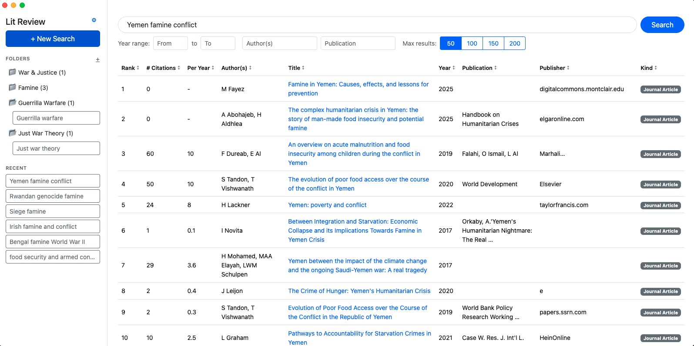

LitReview is a free Mac and Windows app for searching Google Scholar and sorting papers by citations, citations per year, author, and relevance. Where Publish or Perish is built for citation metrics, LitReview is built for finding the papers you need to read.
| LitReview | Publish or Perish | |
|---|---|---|
| Built for | Literature reviews and finding papers | Citation analysis and research metrics |
| Price | Free | Free |
| Search Google Scholar | ||
| Other data sources | Google Scholar only | Scopus, Web of Science, OpenAlex, Crossref, and more |
| Sort by citations | Total and per year | Total and per year |
| Save searches into folders | Searchable folders | Query manager |
| h-index and author metrics | Not the focus | Extensive |
| Platforms | Mac and Windows | Windows, Mac, and Linux |
Publish or Perish, created by Professor Anne-Wil Harzing, is a respected tool for bibliometrics: calculating the h-index, g-index, and other citation metrics for authors and journals. Many researchers, though, open it for a simpler reason. Google Scholar won't let you sort search results by citation count, and Publish or Perish will.
If that's you, LitReview is designed around that job. It's a focused tool for literature reviews:
If you need citation metrics for a tenure case, a grant application, or a bibliometric study, or you want to query databases beyond Google Scholar, Publish or Perish is the specialist tool. The two work well together: use LitReview to find and organize the literature, and Publish or Perish to analyze it.

If you use Publish or Perish mainly to find and sort Google Scholar papers for a literature review, LitReview is a free alternative for Mac and Windows built for exactly that. If you need h-index and other citation metrics, Publish or Perish remains the specialist tool.
Yes. LitReview is free for Mac and Windows with no payment and no trial period. Enter your email and we send you the download links and your license key.
Yes. Many researchers use LitReview to find and organize papers for a literature review and Publish or Perish to analyze citation metrics. Both work alongside citation managers like Zotero and Mendeley.
Publish or Perish is developed by Anne-Wil Harzing. LitReview is not affiliated with or endorsed by Publish or Perish. Comparison based on publicly available information as of October 2026.
No payment and no trial period. Just your email.